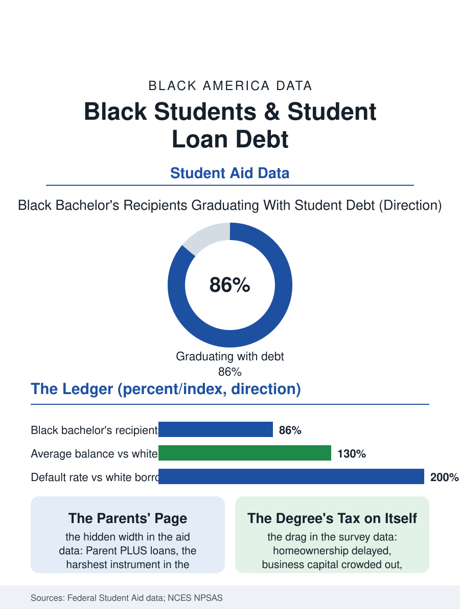

Black Education
The Invoice Behind the Smile: Black Students and Student Debt
Eighty-six percent borrow, the defaults run at multiples, and the parents' page of the ledger is written on the grandmothers' credit. The debt file.

Black students borrow for college at the highest rates and graduate with the deepest debt of any group in the federal data: roughly eighty-six percent of Black bachelor's recipients graduate with loans, carrying average balances well above the white figure, and the graduate school borrowing above them multiplies the ledger into six figures for the professional class the credentials produce. This article reads the student debt file.
The Bachelor's Ledger
The federal student aid data give the file its arithmetic: the Black undergraduate's borrowing rate and balance exceed the other groups' at every institutional tier, the gap composed of the wealth file's contribution capacity, the grant aid's failure to track the price, and the for-profit file's concentration, the sector's borrowers carrying the worst balances against the weakest credentials in the data's most punishing cell. The balance's growth after graduation is the file's second act: the interest's capitalization during the low-wage and graduate school years, the repayment plan's paperwork churn, and the default data, in which the Black borrower's default rate within the tracking window runs at multiples of the white borrower's, the default's consequences, the wage garnishment, the tax refund's seizure, the credit file's decade of damage, falling on the borrower whose degree was supposed to be the credit's foundation. The family file completes the ledger's width: the Parent PLUS loans, the instrument by which the wealth file's parents borrow against their own retirements for the children's tuition at rates and on terms the consumer advocates rank among the federal book's harshest, are held disproportionately by Black parents in the aid data, the HBCU PLUS file being its own chapter of institutional finance written on the grandmothers' credit. The graduate and professional ledger sits atop the bachelor's in the portfolio data, the law and health professional files' six-figure medians composing the Black professional class's founding balance sheet, so that the community's most credentialed generation is also its most leveraged, a fact the income data's celebrations of the degree premium are incomplete without.
Repayment and the Relief Era
The income-driven repayment system's data compose the file's policy center: the plans cap the payment at the income's share in design, and their administrative reality, the annual recertification whose missed paperwork ejects the borrower into the capitalization event, distributes its failures by the borrower's administrative capacity in the pattern of every paperwork system in this atlas. The relief era's programs have written the file's current chapter in public: the public service forgiveness's repaired counts, in which the Black borrower's public sector concentration makes her the program's disproportionate beneficiary where it works, the borrower defense discharges for the for-profit file's victims, and the broad cancellation proposals' course through the courts, whose demographic stakes the analysts priced precisely, the Black borrower's balance distribution making any universal policy a racial policy in effect whatever its text. The wealth file collects the debt's downstream: the homeownership delay, the business capital's crowding out, the retirement contribution deferred, each measured in the survey data as the debt's drag on the exact accumulations the degree was purchased to accelerate, the drag's differential by race being the file's summary statistic.
The Credential's Price, Repriced
The student debt file closes on the price's future, because the file is the tuition system's confession: the credential's cost was shifted, across two generations, from the public's budget to the family's balance sheet, and the family's balance sheets are the wealth file's, so the shift's incidence was never going to be equal, and the data merely record the arithmetic with the borrower's name attached. The institutional responses in the current data, the no-loan aid policies of the wealthy colleges, the HBCUs' debt relief purchases with the pandemic era's funds, the state free community college programs, are the file's trend lines, each an admission that the price had outrun the population the system claims to serve. The aid data count the borrowers each cohort. The file's last entry is the graduation photograph's shadow, the balance behind the smile, carried by the graduate into the first job's negotiation and the first apartment's application, the degree in one hand and its invoice in the other, in a proportion that the federal data, disaggregated at last by the borrower's race, have made impossible to call an accident of individual choice.
More in Black Education
Black Educational Attainment: High School Parity, the College Gap
About 89 percent of Black adults hold a high school diploma and one in four holds a bachelor's degree or higher — the attainment ladder, the college completion gap, and the generational trend.
Historically Black Colleges and Universities: Enrollment and Degrees
More than 100 HBCUs enroll roughly 290,000 students and award about one in six Black bachelor's degrees — an outsized share from a small sector. The federal education data.
Black College Enrollment: 2.4 Million Students
About 2.4 million Black students are enrolled in American colleges — nearly two-thirds of them women. The NCES enrollment data by sector, level, and trend.
Source: U.S. Department of Education, Federal Student Aid portfolio data; National Center for Education Statistics, National Postsecondary Student Aid Study.